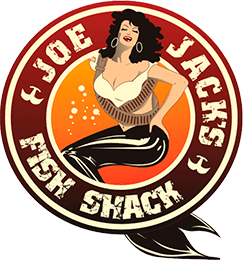
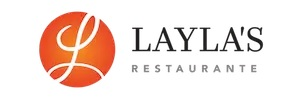
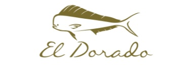
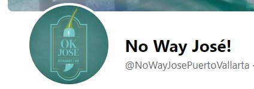

Puerto Vallarta is the perfect blend of old school Mexico with new school tourism. PV is a very safe city in Mexico that not only has tons of tourist every year, but also locals who enjoy the restaurants and beaches. Los Muertos Beach is the beach that stretches the Malecon Boardwalk which starts just North of the pier. There is plenty to do right on the beach including: renting jet skis, going parasailing, pay a captain to take you fishing or snorkeling, and of course our favorite - massages! You can book these through companies as well, but they will be more expensive and less inclined to bargain. We recommend getting a lounge chair a La Palapa, enjoying some cocktails and getting a fell for navigating the local merchants.
|  |  | ||
|  |  | ||